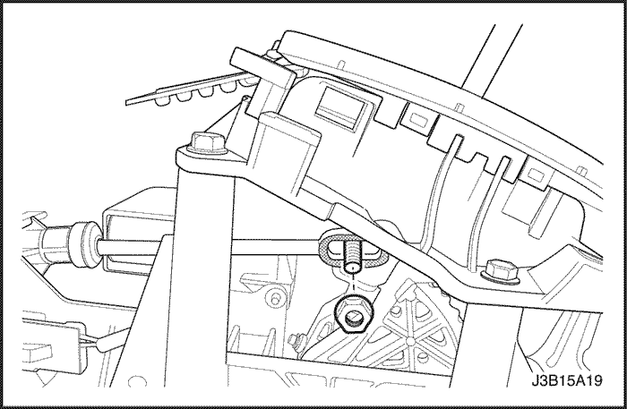

MANTENIMIENTO Y REPARACIÓN
servicio con vehículo en marcha


Procedimiento de comprobación del nivel de líquido del transeje
- Estacione el vehículo sobre una superficie plana.
- Ponga en marcha el vehículo hasta que la temperatura del aceite de la caja de cambios alcance la temperatura normal de funcionamiento.
Aviso: Temperatura normal de la caja de cambios: 70-80 °C (158-176 °F)
- Con el motor al ralentí, cambie de forma manual por toda la gama de la caja de cambios y regrese a la posición de estacionamiento (PARK). Deje el motor al ralentí.

- Quite el tornillo del indicador de nivel del líquido de la caja de cambios.
- Quite el indicador de nivel del líquido de la caja de cambios.
- Limpie cualquier resto de líquido de la caja de cambios del indicador.
- Inserte el indicador en la caja de cambios hasta que esté perfectamente asentado.
Importante: Inspeccionar el nivel del líquido de la caja de cambios cuando la temperatura no es la normal puede resultar en una medición incorrecta. El líquido de la caja de cambios se expande al calentarse.
- Desmonte el indicador y revise el nivel y el estado del líquido en el indicador.
- El nivel de líquido de la caja de cambios a temperatura de funcionamiento normal (1).
- Nivel del líquido de la caja de cambios en frío (2).

- Si el nivel de líquido es incorrecto, revise las siguientes condiciones:
- Líquido por debajo del nivel, revise si hay una fuga y añada líquido a través del indicador de nivel de líquido.
- Líquido por encima del nivel, la caja de cambios tiene un exceso de líquido.
-
- Drene aceite por el tapón de vaciado. Compruebe el nivel de aceite.
Importante: Al añadir el líquido o realizar un cambio total de líquido, utilice siempre ESSO JWS 3309 US ATF.
- Coloque el indicador de nivel de líquido y el tornillo.
Apretar
Apriete el tornillo del indicador del nivel de aceite hasta 10 N•m (89 lb-pulg.).
Sustitución del líquido de la caja de cambios
Procedimiento de desmontaje
- Levante y sujete el vehículo.
- Quite el tapón de drenaje y vacíe el aceite. Deje que pasen 5 minutos para que el líquido e vacíe totalmente.
- Quite la junta del tapón de vaciado y deséchela.
procedimiento de montaje
- Monte una junta nueva en el tapón de drenaje.
- Ponga el tapón de drenaje.
Apretar
Apriete el tapón de drenaje hasta 40 N•m (30 lb-pie).
- Asegúrese de que el vehículo está nivelado.
- Quite el tornillo del indicador de nivel de líquido y el indicador.
Importante: Utilice siempre ESSO JWS 3309 US ATF.
Importante: No quite el tornillo de anclaje situado en la parte superior de la caja de cambios para comprobar o añadir líquido. Quitar el tornillo cambiaría la posición de los componentes internos y haría que tuviese de desmontarse la caja de cambios para realizar la reparación.
- Añada el líquido de la caja de cambios utilizando el indicador de nivel de líquido.
- Arranque el motor y deje en marcha el vehículo hasta que la temperatura del aceite de la caja de cambios alcance los 70-80 °C (158-176 °F).
- Aplique el freno de estacionamiento.
- Pise el pedal de freno y mueva la palanca de cambio lentamente por todas las marchas, desde estacionamiento (P) hasta gama baja, parando 3 segundos en cada posición. Vuelva a colocar la palanca de cambios en la posición de estacionamiento (P) a ralentí.
- Extraiga el indicador de nivel de nuevo y compruebe si el nivel de líquido está dentro del intervalo Caliente (HOT).
- Ponga el indicador de nivel de aceite.

Ajuste del cable de control de cambios
procedimiento de ajuste
- Mueva la palanca de control de cambio hasta la posición N - punto muerto.
Importante: Para que el cambio de marchas sea adecuado, las distintas posiciones del cable de mando deben coincidir en la palanca de mando del cambio del vehículo y en la palanca selectora de la caja de cambios.

- Afloje la tuerca de ajuste del cable de mando.
- Coloque el interruptor de TR en punto muerto (N).
- Tire del cable de mando del cambio hasta que quede tirante y apriete la tuerca de ajuste de dicho cable.
Apretar
Apriete la tuerca de ajuste del cable de mando hasta 8 N•m (71 lb-pulg.).
- Monte la consola del piso. Consulte la Sección 9G, Guarnecido interior.

Cable de control de cambios
Procedimiento de desmontaje
- Desmonte la batería y la bandeja. Consulte la Sección 1E2, Sistema eléctrico del motor - 2.0 Diesel.
- Desmonte la consola del piso. Consulte la Sección 9G, Guarnecido interior.
- Ponga el freno de estacionamiento.
- Coloque la palanca de control de cambios en la posición N.
- Quite la tuerca de ajuste del cable.
- Desconecte el cable de mando del conjunto de la palanca de mando del cambio de marchas.
Importante: El cable de control de cambio debe desconectarse de la palanca del interruptor de gama de transmisión antes de desconectarlo del soporte del cable de control. De lo contrario, podrían provocarse daños en la palanca de cambios manual, lo que supondría el desmontaje de la caja de cambios.
- Desmonte el clip de la palanca de cambios del alcance de la transmisión y desconecte el cable de control de cambios.
- Desmonte el clip del soporte del cable de mando del cambio de marchas.

- Desconecte el cable de control del cambio del panel del salpicadero.
- Retire el cable de mando del vehículo.
procedimiento de montaje
- Coloque el cable de control de cambios en el soporte del cable.
- Fije el cable en el soporte con un nuevo clip de fijación de cable de control.
- Con la palanca del interruptor de TR en punto muerto (N), instale el clip en la palanca.
- Fije el pasacables del cable de control de cambios presionando el cable en el orificio pasante del panel del salpicadero.
- Asegúrese de que la palanca de control de cambios se encuentra en la posición de punto muerto (N).
- Conecte el cable de mando al conjunto de la palanca de mando del cambio de marchas.
- Coloque la tuerca de apriete del ajuste del cable de mando del cambio de marchas.
Apretar
Apriete la tuerca hasta 8 N•m (71 lb-pulg.).
- Ajuste el cable de mando del cambio de marchas Consulte el apartado "Ajuste del cable de mando del cambio de marchas" de esta sección.
- Monte la consola delantera del piso. Consulte la Sección 9G, Guarnecido interior.
- Monte la batería y la bandeja. Consulte la Sección 1E2, Sistema eléctrico del motor - 2.0 Diesel.
Conjunto de palanca de control de cambios
Procedimiento de desmontaje
- Desconecte el cable negativo de la batería.
- Desmonte la consola del piso. Consulte la Sección 9G, Guarnecido interior.
- Desenchufe los conectores del cableado de la palanca de mando del cambio de marchas.
- Afloje la tuerca de ajuste del cable de mando.
- Desconecte el cable de mando del conjunto de la palanca de mando del cambio de marchas.

- Quite los tornillos y las tuercas de montaje del conjunto de la palanca de mando del cambio de marchas.
- Desmonte el conjunto de la palanca de mando del cambio de marchas.
procedimiento de montaje
- Monte el conjunto de la palanca de mando del cambio de marchas y los tornillos y tuercas de fijación.
Apretar
Arpiete los tornillos y las tuercas del conjunto de la palanca de mando del cambio de marchas a 8 N•m (71 lb-pulg.).
- Conecte el cable de mando al conjunto de la palanca de mando del cambio de marchas.
- Apriete la tuerca de ajuste del cable de mando.
Apretar
Apriete la tuerca de ajuste del cable de mando hasta 8 N•m (71 lb-pulg.).
- Enchufe el conector del cableado.
- Ajuste el cable de mando. Consulte el apartado "Ajuste del cable de mando" de esta sección.
- Monte la consola del piso. Consulte la Sección 9G, Guarnecido interior.
- Conecte el cable negativo de la batería.

Palanca de mando del cambio de marchas
Procedimiento de desmontaje
- Ponga el freno de estacionamiento.
- Quite el pomo de la palanca de control de cambios.

procedimiento de montaje
- Monte el mando del cambio de marchas dentro de la palanca de mando del cambio de marchas.
Interruptor de alcance de transmisión (TR)
Herramientas necesarias
Herramienta de alineación del indicador de la transmisión J 45404
Procedimiento de desmontaje
- Desmonte la batería y la bandeja. Consulte la Sección 1E2, Sistema eléctrico del motor - 2.0 Diesel.
Importante: El eje manual de la caja de cambios debe estar en la posición de punto muerto (N) antes de volver a instalar el interruptor.
- Aplique el freno de estacionamiento y coloque la palanca de cambios en la posición de punto muerto (N).

- Desenchufe el conector (1) eléctrico del interruptor TR y el conector (2) eléctrico de la caja de cambios.
- Desconecte el cable de la palanca del interruptor de TR. Consulte el apartado "Cable de mando del cambio de marchas" de esta sección.

- Quite la tuerca y la palanca del interruptor de TR.

- Utilizando un destornillador, doble las lengüetas hacia fuera desde la tuerca del eje manual.

- Quite la tuerca, la arandela de la lengüeta y la arandela plana.

- Quite los tornillos del interruptor de TR.
- Desmonte el interruptor de TR.
procedimiento de montaje
- Coloque el interruptor de gama de transmisión (TR) en la palanca del eje manual.
- Ponga los tornillos. Apriete a mano SÓLO en este momento.
- Coloque la arandela plana, la arandela de la lengüeta y la tuerca.
Apretar
Apriete la tuerca del interruptor de TR hasta 7 N•m (62 lb-pie).
- Asegúrese de que el eje manual se encuentra en la posición de punto muerto (N).
- Doble las lengüetas de la arandela de bloqueo para fijar la tuerca.

- Instale la herramienta J 45404 en el eje manual y gire el interruptor de TR hasta que la línea base de punto muerto del interruptor quede alineada con la línea del indicador de la herramienta J 45404.
- Apriete los tornillos del interruptor de TR.
Apretar
Apriete los tornillos del interruptor de TR hasta 25 N•m (18 lb-pie).
- Desmonte la herramienta J 45404 del eje manual.
- Instale la palanca del interruptor de TR y la tuerca.
Apretar
Apriete la tuerca de la palanca de TR hasta 16 N•m (12 lb-pie).
- Coloque el cable en la palanca del interruptor de TR y ajústelo. Consulte el apartado "Cable de mando del cambio de marchas" de esta sección.
- Enchufe el conector eléctrico (1, 2).
- Monte la batería y la bandeja. Consulte la Sección 1E2, Sistema eléctrico del motor - 2.0 Diesel.
- Después de ajustar el interruptor de TR, compruebe que el motor sólo arranque en posición de estacionamiento (P) o de punto muerto (N). Si el motor arranca en alguna otra posición, vuelva a ajustar el interruptor.
Ajuste del interruptor del alcance de la transmisión (TR)
Herramientas necesarias
Herramienta de alineación del indicador de la transmisión J 45404
procedimiento de ajuste
- Desmonte la batería y la bandeja. Consulte la Sección 1E2, Sistema eléctrico del motor - 2.0 Diesel.
- Cambie la palanca de control hasta la posición de punto muerto (N).
- Retire el cable de control de cambios de la palanca del interruptor de TR.
- Afloje los tornillos del interruptor de TR.
- Instale la herramienta J 45404 en el eje manual y gire el interruptor de TR hasta que la línea base de punto muerto del interruptor quede alineada con la línea del indicador de la herramienta J 45404.
- Apriete los tornillos del interruptor de TR.
Apretar
Apriete los tornillos del interruptor de TR hasta 25 N•m (18 lb-pie).
- Desmonte la herramienta J 45404 del eje manual.
- Coloque el cable de control de cambios en la palanca del interruptor de TR y ajuste el cable. Consulte el apartado "Cable de mando del cambio de marchas" de esta sección.
- Monte la batería y la bandeja. Consulte la Sección 1E2, Sistema eléctrico del motor - 2.0 Diesel.
- Después de ajustar el interruptor de TR, compruebe que el motor sólo arranque en posición de estacionamiento (P) o de punto muerto (N). Si el motor arranca en alguna otra posición, vuelva a ajustar el interruptor.
Sensor de velocidad de entrada
Procedimiento de desmontaje
- Desconecte el cable negativo de la batería.
- Desmonte la batería y la bandeja. Consulte la Sección 1E2, Sistema eléctrico del motor - 2.0 Diesel.
- Quite el conector eléctrico del sensor de velocidad de entrada (3) del propio sensor de entrada.

- Quite el tornillo del sensor de velocidad de entrada.
- Desmonte el sensor de velocidad de entrada de la caja de cambios.
- Desmonte la junta tórica del sensor de velocidad de entrada. Deseche la junta tórica.
procedimiento de montaje
- Aplique el líquido de la caja de cambios a la nueva junta tórica del sensor de velocidad de entrada.
- Coloque la nueva junta tórica del sensor de velocidad de entrada.
- Monte el sensor de velocidad de entrada en la caja de cambios.
- Ponga el tornillo del sensor de velocidad de entrada.
Apretar
Apriete el tornillo de fijación del sensor de velocidad de entrada hasta 6 N•m (53 lb-pulg.).
- Enchufe el conector eléctrico (3) en el sensor de velocidad de entrada.
- Monte la batería y la bandeja. Consulte la Sección 1E2, Sistema eléctrico del motor - 2.0 Diesel.
- Conecte el cable negativo de la batería.
Sensor de velocidad de salida
Procedimiento de desmontaje
- Desconecte el cable negativo de la batería.
- Desmonte la batería y la bandeja. Consulte la Sección 1E2, Sistema eléctrico del motor - 2.0 Diesel.
- Quite el conector eléctrico del sensor de velocidad de salida (4) y el propio sensor de velocidad de salida.

- Ponga el tornillo del sensor de velocidad de salida.
- Desmonte el sensor de velocidad de salida de la caja de cambios.
- Desmonte la junta tórica del sensor de velocidad de salida. Deseche la junta tórica.
procedimiento de montaje
- Aplique el líquido de la caja de cambios a la nueva junta tórica del sensor de velocidad de salida.
- Coloque la nueva junta tórica del sensor de velocidad de salida.
- Coloque el sensor de velocidad de salida en la caja de cambios.
- Ponga el tornillo del sensor de velocidad de salida.
Apretar
Apriete el tornillo de fijación del sensor de velocidad de salida hasta 6 N•m (53 lb-pulg.).
- Enchufe el conector eléctrico (4) al sensor de velocidad de salida.
- Monte la batería y la bandeja. Consulte la Sección 1E2, Sistema eléctrico del motor - 2.0 Diesel.
- Conecte el cable negativo de la batería.

Módulo de control electrónico de la transmisión (TCM)
Procedimiento de desmontaje
- Desconecte el cable negativo de la batería.
- Desenchufe los conectores del cableado del TCM.
- Desmonte el módulo de control de la caja de cambios (TCM) y quite las tuercas.
procedimiento de montaje
- Ponga las tuercas de fijación del TCM.
Apretar
Apriete las tuercas de fijación del TCM hasta 8 N•m (71 lbs-pulg.).
- Enchufe los conectores eléctricos.
- Conecte el cable negativo de la batería.

Conjunto de la línea de refrigerante de aceite
Procedimiento de desmontaje
- Levante y apoye el vehículo adecuadamente.
- Coloque un cárter de vaciado y un recipiente adecuado debajo del vehículo.
- Desconecte los manguitos de aceite del radiador.

- Retire el tornillo del conjunto del tubo del enfriador de aceite, de la caja de cambios.
- Desconecte el conjunto de la línea del refrigerador de aceite.
- Sustituya las juntas de la línea del refrigerador del aceite de la caja de cambios. Consulte el apartado "Juntas de la línea del refrigerador de aceite" de esta sección.
procedimiento de montaje
- Instale el conjunto de la línea del del refrigerador de aceite en la caja de cambios.
- Coloque el tornillo del conjunto de la línea del refrigerador de aceite.
Apretar
Apriete el tornillo del conjunto de la línea del refrigerador de aceite 10 N•m (89 lb-pulg.).
- Conecte los manguitos de aceite al radiador.
- soporte izquierdo de la caja de cambios
- Añada líquido en la caja de cambios.
- Compruebe el nivel de aceite. Consulte el apartado "Procedimiento de comprobación del aceite de la caja de cambios" de esta sección.
Juntas del tubo del refrigerador de aceite
Herramientas necesarias
Instalador de juntas de las tuberías del refrigerador J41239-1
Extractor de juntas de las tuberías del refrigerador J45201
Procedimiento de desmontaje
- Levante y apoye el vehículo adecuadamente.
- Coloque un cárter de vaciado y un recipiente adecuado debajo del vehículo.
- Retire el conjunto de la línea del enfriador de aceite de la caja de cambios. Consulte el apartado "Conjunto de la línea del refrigerador de aceite" de esta sección.

Importante: Asegúrese de que la herramienta J 45201 está bien asentada en el orificio de la junta de la caja de cambios.
- Inserte la pieza de collarín (2) de la herramienta J 45201 en la junta de la línea del refrigerador.
- Inserte la pieza roscada de forzado (1) en la herramienta J 45201 en el collarín (2)
- Apriete el tornillo forzador (1) hasta el límite.

- Enrosque el collarín (1) de la herramienta J 45201 en el collarín (3) hasta el límite.

- Gire el collarín en el sentido de las agujas del reloj para quitar la junta de la línea del refrigerante.
- Deseche la junta.
- Limpie los orificios de la caja para las juntas de la línea del refrigerador.

procedimiento de montaje
- Inserte 2 juntas nuevas de línea del refrigerador de la caja de cambios (1) en el orificio de la caja.
- Quite el nudo de la herramienta J 41239-1.
- Instale el nudo de la herramienta J 41239-1 en las juntas de la línea del refrigerador de la caja de cambios.
- Golpee las 2 juntas nuevas de línea del refrigerador de la caja de cambios (1) hasta instalarlas en el orificio de la caja.
- Coloque el conjunto de la línea del refrigerador de aceite. Consulte el apartado "Conjunto de la línea del refrigerador de aceite" de esta sección.
- Baje el vehículo.
- Añada líquido en la caja de cambios.
- Compruebe el nivel de aceite. Consulte el apartado "Procedimiento de comprobación del aceite de la caja de cambios" de esta sección.
Soporte de montaje del transeje izquierdo
Herramientas necesarias
Fijación del soporte del motor DW110-060
Procedimiento de desmontaje
- Desmonte la batería y la bandeja. Consulte la Sección 1E2, Sistema eléctrico del motor - 2.0 Diesel.
- Instale la DW110-060.
- Apoye la caja de cambios sobre un gato de soporte.

- Quite los tres tornillos del soporte de fijación izquierdo de la caja de cambios.
- Quite el tornillo y la tuerca de la caja de soporte de fijación de la caja de cambios.
- Desmonte el soporte de fijación izquierdo de la caja de cambios.
procedimiento de montaje
- Instale el soporte de fijación izquierdo de la caja de cambios y coloca los tres tornillos del soporte de fijación.
Apretar
Apriete los tres tornillos del soporte de fijación izquierdo de la caja de cambios hasta 47 N•m (35 lb-pie).
- Coloque los tornillos y la tuerca de la jaula del soporte de fijación de la caja de cambios.
Apretar
Apriete el tornillo y la tuerca de la jaula del soporte de fijación de la caja de cambios hasta 65 N•m (48 lb-pie).
- Desmonte la DW110-060.
- Monte la batería y la bandeja. Consulte la Sección 1E2, Sistema eléctrico del motor - 2.0 Diesel.
Conjunto de transeje
Herramientas necesarias
Fijación del soporte del motor DW110-060
Procedimiento de desmontaje
- Desmonte la batería y la bandeja. Consulte la Sección 1E2, Sistema eléctrico del motor - 2.0 Diesel.
- Desmonte el conjunto del filtro de combustible. Consulte la Sección 1F2, Controles del motor - 2.0 Diesel.
- Vacíe el aceite de la caja de cambios. Consulte el apartado "Procedimiento de sustitución del aceite de la caja de cambios" de esta sección.
- Desconecte el cable de mando de la caja de cambios. Consulte el apartado "Cable de mando del cambio de marchas" de esta sección.
- Desconecte el conector eléctrico (1) del interruptor de alcance de transmisión (TR).
- Desenchufe el conector eléctrico (2) del cableado de la caja de cambios.
- Desenchufe el conector eléctrico (3) del sensor de velocidad de entrada y el conector eléctrico (4) del sensor de velocidad de salida.

- Quite los dos tornillos superiores de sujeción de la caja de cambios al motor.
- Desmonte el motor de arranque. Consulte la Sección 1E2, Sistema eléctrico del motor - 2.0 Diesel.
- Sujete el conjunto del motor utilizando la fijación del soporte del motor DW110-060.
- Levante y apoye el vehículo adecuadamente.
- Desmonte la cubierta inferior del motor. Consulte la sección 9N, Bastidor y bajos de la carrocería.

- Desmonte el larguero central. Consulte la sección 9N, Bastidor y bajos de la carrocería.
- Desmonte el tubo de escape delantero. Consulte la Sección 1G2, Sistema de escape del motor - 2.0 Diesel.
- Desmonte el travesaño. Consulte la Sección 2C, Suspensión delantera.

- Desmonte la fijación delantera del motor. Consulte la Sección 1B, Mecánica del motor - 2.0 Diesel.
- Desmonte el árbol de transmisión. Consulte la Sección 3A, Árbol de transmisión de la caja de cambios automática.
- Retire el tubo de salida del enfriador de aceite de la caja de cambios. Consulte el apartado "Conjunto de la línea del refrigerador de aceite" de esta sección.

- Tras retirar la tapa de plástico, desmonte los 6 tornillos del volante motor al convertidor de par.

- Quite los tornillos del soporte de fijación trasero de la caja de cambios.

- Soporte el conjunto de la caja de cambios utilizando el gato de apoyo.

- Quite los tornillos de fijación que unen la brida del cárter del aceite a la caja de cambios.

- Quite los tornillos que unen la parte inferior izquierda del motor a la caja de cambios, en el lado del soporte de fijación trasero de la caja de cambios.

- Quite el tornillo de la parte inferior derecha que une el motor a la caja de cambios, junto a la fijación delantera del motor.
- Quite los tornillos del soporte de fijación izquierdo de la caja de cambios. Consulte el apartado "Soporte de fijación izquierdo de la caja de cambios" de esta sección.
- Desmonte el conjunto de la caja de cambios con cuidado.
procedimiento de montaje
- Instale la caja de cambios en el vehículo y apoye el conjunto de la caja de cambios utilizando el gato de apoyo.
- Coloque los tornillos del soporte de fijación izquierdos de la caja de cambios. Consulte el apartado "Soporte de fijación izquierdo de la caja de cambios" de esta sección.
- Coloque los tornillos de la parte inferior derecha que unen el motor a la caja de cambios, junto a la fijación delantera del motor.
Apretar
Apriete el tornillo inferior derecho del motor a la caja de cambios hasta 73 N•m (54 lb-pie).
- Coloque los tornillos que unen la parte inferior izquierda del motor a la caja de cambios, en el lado del soporte de fijación trasero de la caja de cambios.
Apretar
Apriete los tornillos inferiores izquierdos del motor a la caja de cambios hasta 73 N•m (54 lb-pie).
- Coloque los tornillos que unen la brida del cárter del aceite a la caja de cambios.
Apretar
Apriete los tornillos de fijación de la brida del cárter del aceite a la caja de cambios hasta 50 N•m (37 lb-pie).
- Coloque los tornillos del soporte de fijación trasero de la caja de cambios.
Apretar
Apriete los tornillos del soporte de fijación trasero de la caja de cambios hasta 90 N•m (66 lb-pie).
- Coloque los 6 tornillos del volante motor al convertidor de par y la tapa de plástico.
Apretar
Apriete los tornillos del convertidor de par al volante motor hasta 45 N• m (33 lb-pie).
- Monte los tornillos superiores de fijación de la caja de cambios al motor.
Apretar
Apriete los tornillos superiores de fijación de la caja de cambios al motor hasta 73 N•m (54 lb-pie).
- Vuelva a conectar las tuberías del refrigerador a la caja de cambios. Consulte el apartado "Conjunto de la línea del refrigerador de aceite" de esta sección.
- Monte el motor de arranque. Consulte la Sección 1E1, Sistema eléctrico del motor o la Sección 1E2, Sistema eléctrico del motor - 2.0 Diesel.
- Coloque los tornillos de la fijación delantera del motor y la fijación. Consulte la Sección 1B, Mecánica del motor - 2.0 Diesel.
Apretar
Apriete los tornillos de la fijación delantera del motor hasta 60 N•m (44 lb-pie).
- Monte el árbol de transmisión. Consulte la Sección 3A, Árbol de transmisión de la caja de cambios automática.
- Monte el tubo de escape delantero. Consulte la Sección 1G2, Sistema de escape del motor - 2.0 Diesel.
- Monte el larguero central. Consulte la sección 9N, Bastidor y bajos de la carrocería.
- Monte el travesaño. Consulte la Sección 2C, Suspensión delantera.
- Monte la cubierta inferior del motor. Consulte la sección 9N, Bastidor y bajos de la carrocería.
- Baje el vehículo.
- Desmonte la DW110-060 del motor.
- Enchufe el conector eléctrico (1) del interruptor de alcance de transmisión (TR).
- Enchufe el conector eléctrico (2) del cableado de la caja de cambios.
- Enchufe el conector eléctrico (3) del sensor de velocidad de entrada y el conector eléctrico (4) del sensor de velocidad de salida.
- Conecte el cable de mando en la caja de cambios. Consulte el apartado "Cable de mando del cambio de marchas" de esta sección.
- Ajuste el cable de mando del cambio de marchas Consulte el apartado "Ajuste del cable de mando del cambio de marchas" de esta sección.
- Monte el conjunto del filtro de combustible. Consulte la Sección 1F2, Controles del motor - 2.0 Diesel.
- Monte la batería y la bandeja. Consulte la Sección 1E2, Sistema eléctrico del motor - 2.0 Diesel.
- Añada líquido en la caja de cambios.
- Compruebe el nivel de aceite. Consulte el apartado "Procedimiento de comprobación del aceite de la caja de cambios" de esta sección.
 | |  | |
| © Copyright Chevrolet Europe. Reservados todos los derechos |